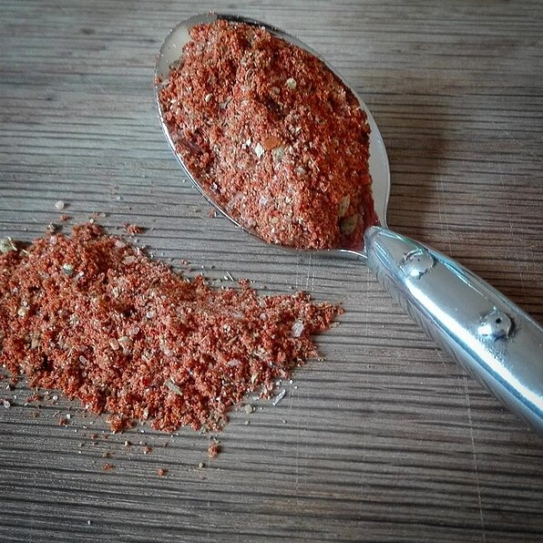

Taco Seasoning

Description
Depending on how spicy you and your
family like your dishes, use as little or as much as you want.
Ingredients
- 1 tablespoon chili powder
- ¼ teaspoon garlic powder
- ¼ teaspoon onion powder
- ¼ teaspoon crushed red pepper flakes
- ¼ teaspoon dried oregano
- ½ teaspoon paprika
- 1 ½ teaspoons ground cumin
- 1 teaspoon sea salt
- 1 teaspoon black pepper
Steps
- n a small bowl, mix together chili powder, garlic powder, onion powder, red pepper flakes, oregano, paprika, cumin, salt and pepper.
Store in an airtight container.